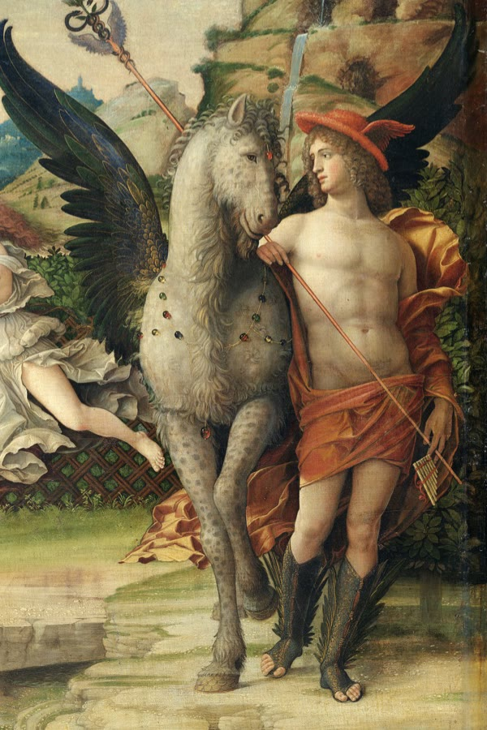

Art options for the details room
Decided and hung: 4 Accommodations, Carpaccio’s Dream of St Ursula · 5 Logistics (terrain), Lorenzetti’s countryside · 6 Guest policies, Mantegna’s Court of Gonzaga · 7 is the gift-shop stand under the main frame.
3 Travel: settled, pending where it hangs
Four works: a centaur, a chariot, Pegasus, and now a dolphin-drawn shell. For Pegasus I chose the Mantegna detail over the Leighton: it is Italian and of your period, it comes from a painting already in your gallery, and the figure beside the horse is Mercury, the god of travellers.

CHOSEN · Sandro Botticelli, Pallas and the Centaur, c. 1482
10598 × 14960 px · Public domain

CHOSEN · Guido Reni, Aurora (the chariot), 1614
2498 × 995 px · Public domain

CHOSEN · Pegasus with Mercury, a detail of Mantegna’s Parnassus, 1497
600 × 900 px · Public domain

ADDED · Raphael, The Triumph of Galatea, Villa Farnesina, c. 1512. She crosses the sea in a shell drawn by dolphins: travel by water, which the trio was missing
1050 × 1381 px · Public domain
2 Schedule: works about time
April and the Raphael banquet stay first and second. I searched hard for hourglasses and sundials. The honest finding: old paintings that put an hourglass front and centre are almost all vanitas still lifes, and they come with a skull. The ones without a skull show Father Time as a figure. These are the best of what exists.

Follower of Laurent de La Hyre, A Dance to the Music of Time, 17th century. Father Time plays while the Seasons dance in a garden: bright, festive, and plainly about time. My pick
5639 × 4583 px · Public domain

Andries Lens, Time Clipping Cupid’s Wings, 1784. Time and Love, with the scythe at their feet
1643 × 1985 px · Public domain

Time Clipping the Wings of Love, 17th century (Nationalmuseum, Stockholm). The same subject, darker
2466 × 4081 px · Public domain

Adriaen Coorte, Vanitas with a Skull and Hourglass, 1686. The clearest hourglass I found, but the skull comes with it
2282 × 2836 px · Public domain
5 Logistics: works that read as weather
These are unmistakably weather. The Lorenzetti stays hung for terrain.

Claude-Joseph Vernet, A Storm on a Mediterranean Coast, 1767. Painted from his years in Italy; wind, waves, a lighthouse. My pick
4259 × 3283 px · Public domain

Italian school, Landscape with Figures in a Storm, 18th century. Trees bent double by the wind
1800 × 1327 px · Public domain

Marco Ricci, Landscape with a Storm, c. 1720s. Italian
2000 × 1392 px · Public domain

Jan Siberechts, Landscape with Rainbow, c. 1690. A storm and a rainbow at once
1919 × 1524 px · Public domain

Peter Paul Rubens, Landscape with a Rainbow, c. 1636 (small file)
1255 × 824 px · Public domain

Bon Boullogne, Juno Asking Aeolus to Release the Winds, c. 1700. The wind gods themselves
2255 × 1711 px · Public domain

Bartolomeo Manfredi, Allegory of the Four Seasons, c. 1610. Italian; the seasons as four people
2106 × 3099 px · Public domain
1 Main details: a full scene at a villa
Colour, a crowd, and a villa. The Pozzoserrato is the closest thing in art to a party at a place like Cetinale: a villa garden with a maze, musicians, boats and dozens of guests.

Lodewijk Toeput (Pozzoserrato), Pleasure Garden with a Maze, c. 1579–84. Painted in the Veneto; the same artist as the drawing you liked, in full colour. My pick
2000 × 1446 px · Public domain

The same painting, a brighter photograph of it
1500 × 1103 px · Public domain

Bonifacio Veronese, Dives and Lazarus, c. 1540s. A party under a villa loggia: musicians, guests, gardens behind
1600 × 729 px · Public domain

Caspar van Wittel, Villa Medici and its Garden, Rome, 1685. A grand villa front with strolling guests
1339 × 1000 px · Public domain

Caspar van Wittel, Villa Farnese at Caprarola, c. 1720
1311 × 650 px · Public domain

Bernardo Bellotto, Villa Cagnola at Gazzada, 1744. A villa in its landscape; few figures
1220 × 800 px · Public domain
.jpg)


_Tanz_zur_Musik_der_Zeit.jpg)


_-_Landscape_with_a_Storm_-_RCIN_400577_-_Royal_Collection.jpg)


_-_Pleasure_Garden_with_a_Maze_-_RCIN_402610_-_Royal_Collection.jpg)
_-_Pleasure_garden_with_a_maze_-_c._1579-84.jpg)


.jpg)

{kind=link}